/ video-salon-website-inspired-by-"vnutri-lapenko”
[ output ]
// here suppose to be a link to readymag website but due to political restrictions it’s unavailable
idk, try to use vpn
so, for now — here’s a screen recording>
[ process-log ]
mission:
during lockdown, i spent an unhealthy amount of time on youtube
Anton Lapenko's series was trending at the time. He has an 80-90s setting, does parodies and shares videos on youtube.
hese facts made me think:
– what if these videos were actually made in the 80s and 90s?
Youtube has now replaced videotapes.What used to be one VHS tape has become one YouTube video. Can you imagine how many cassettes it would take to record all the videos on the platform?
// so, I took about 663 screenshots from the lapenko series
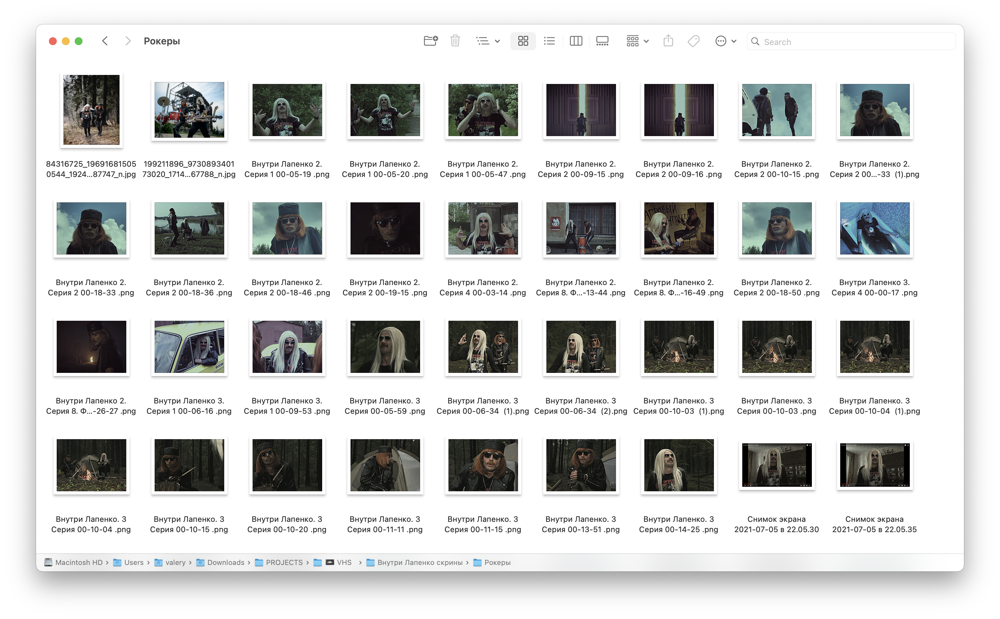
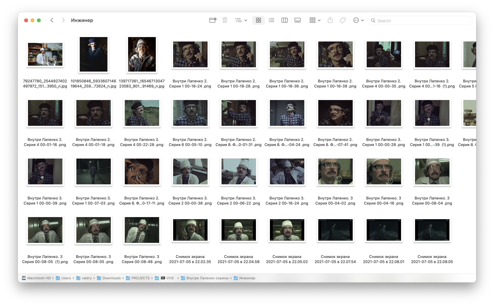
// then converted them into covers for vhs cassettes of films popular during that period.
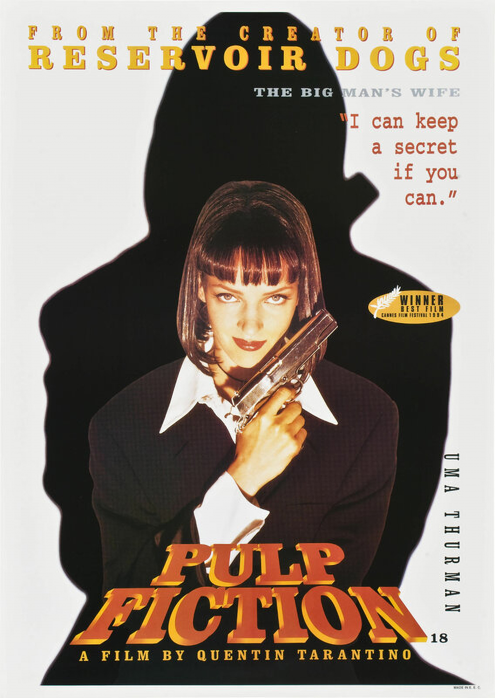
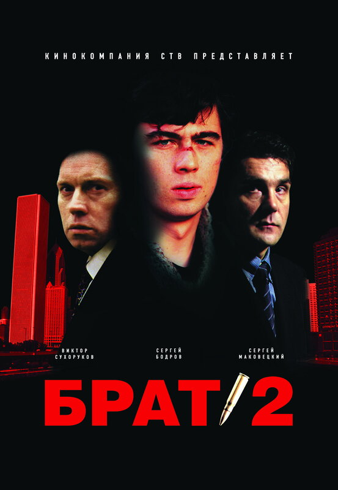
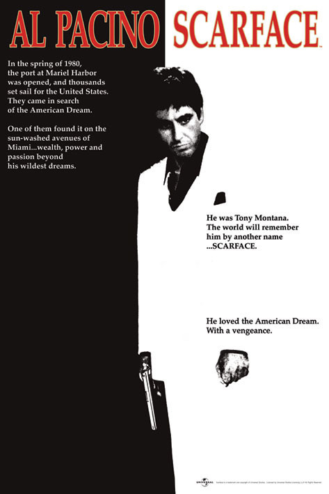
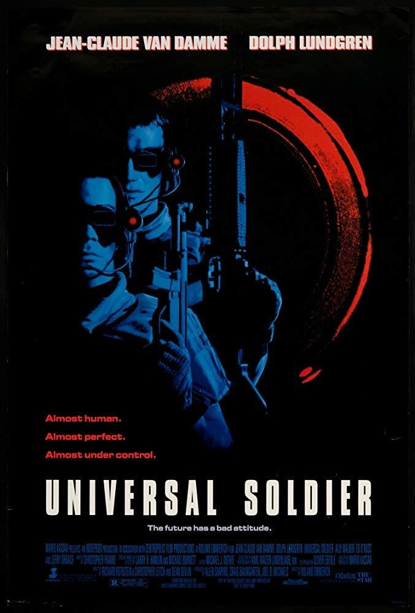
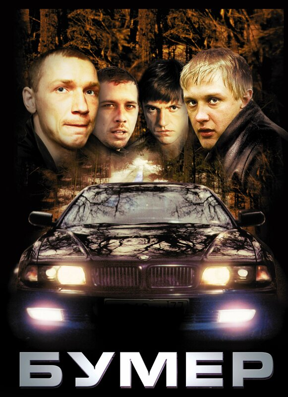
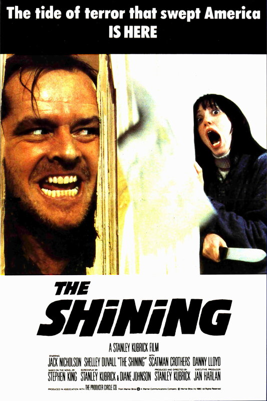
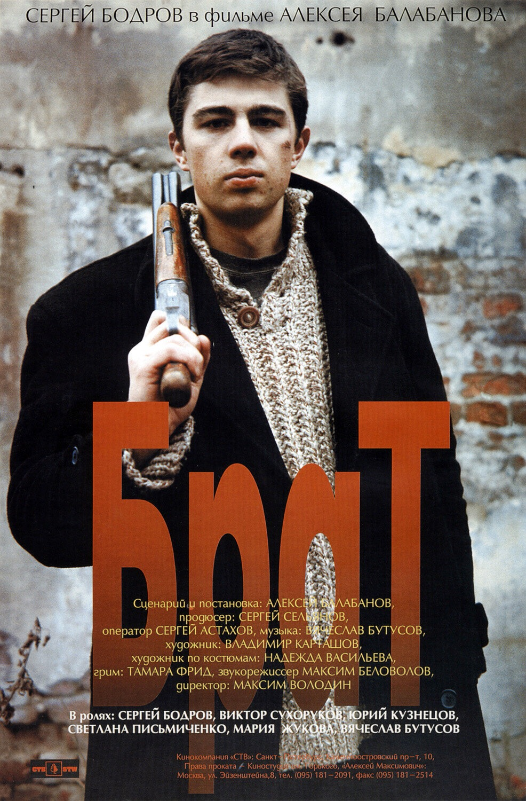
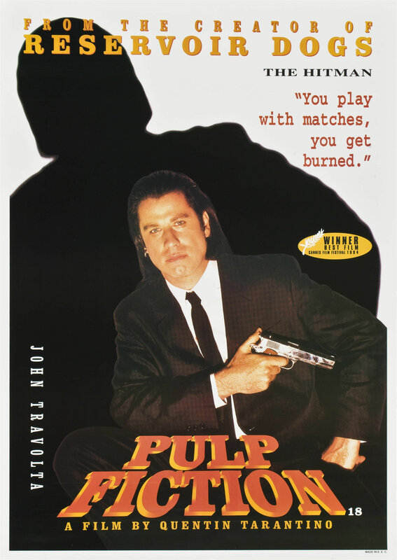
// eventually there were around 40 covers, but it wasn't enough...

// if 1 YouTube video = 1 VHS tape then YouTube = video rental
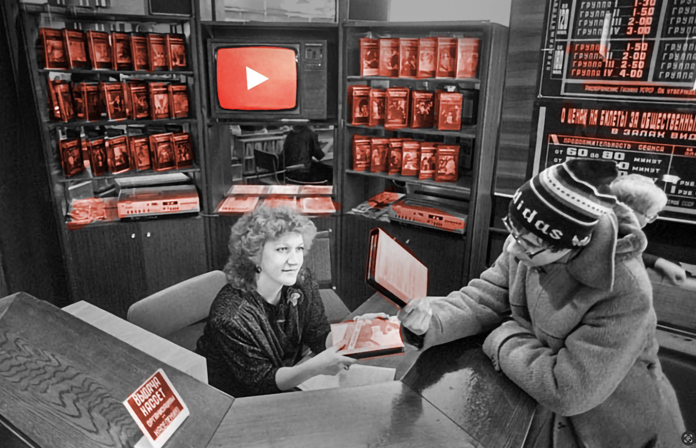
// so i built a world where old vhs salons promoted tapes the same way modern platforms promote videos:recommendations, thumbnails, categories, clickbait, and so on
basically:– what would youtube look like in the 80s and 90s?
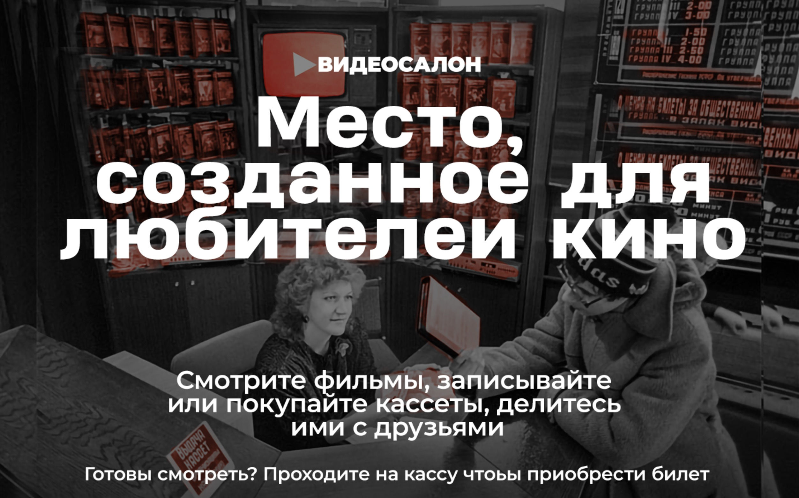
// when I was doing some research on how people watched films in the 80s and 90s, it led me to warm nostalgic posts on life journal, vk and pikabu about the Russian vhs aesthetic.
people shared stories about rented tapes, pirated translations, handwritten labels, recordings over recordings,
it was extremely fascinating to read all these lovely memories.
highly recommend to take a look!
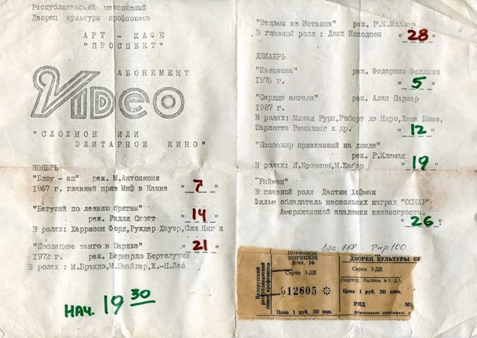
// i turned it into a vhs landing page. Read the text carefully, because I included a lot of tiny details from that time and too many jokes :)

// i promise, you will feel nostalgic for a time you've never been to
[ external-links ]